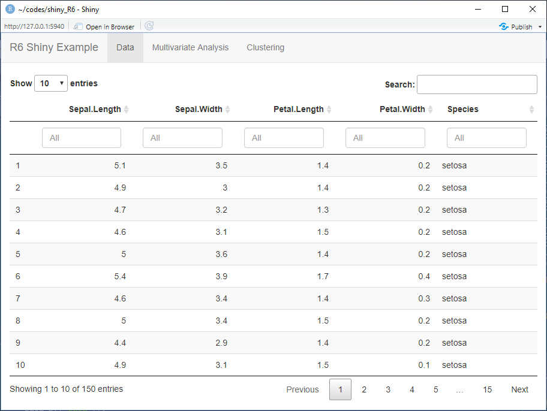
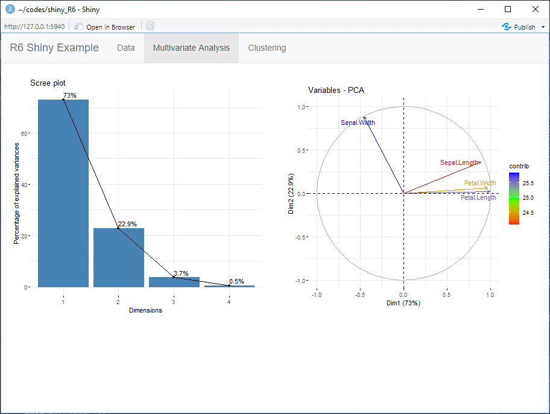
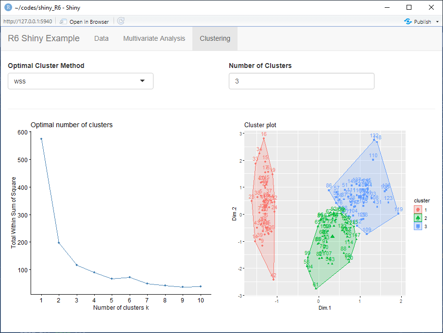
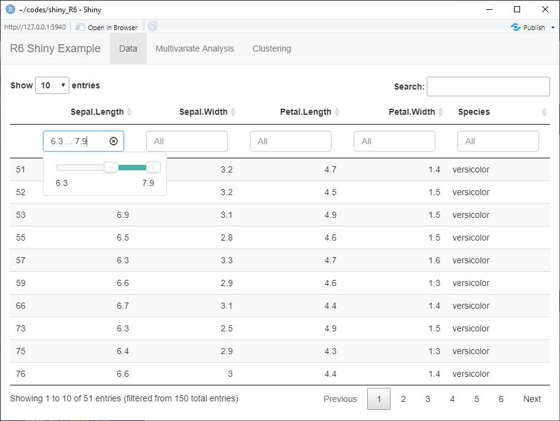
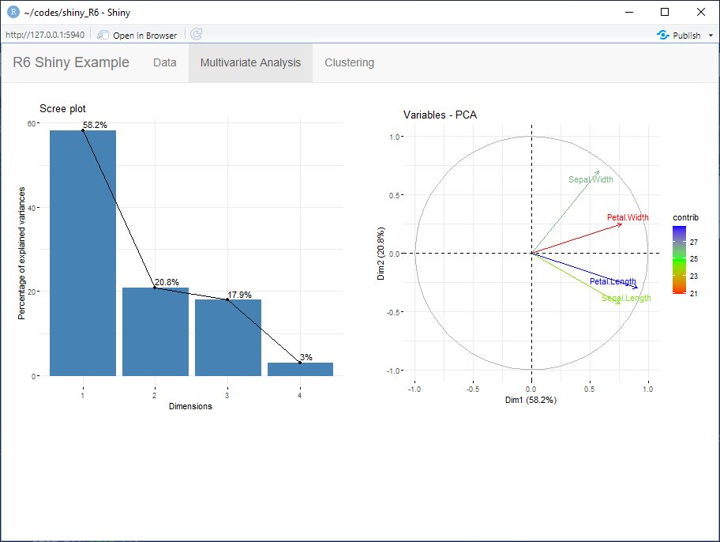
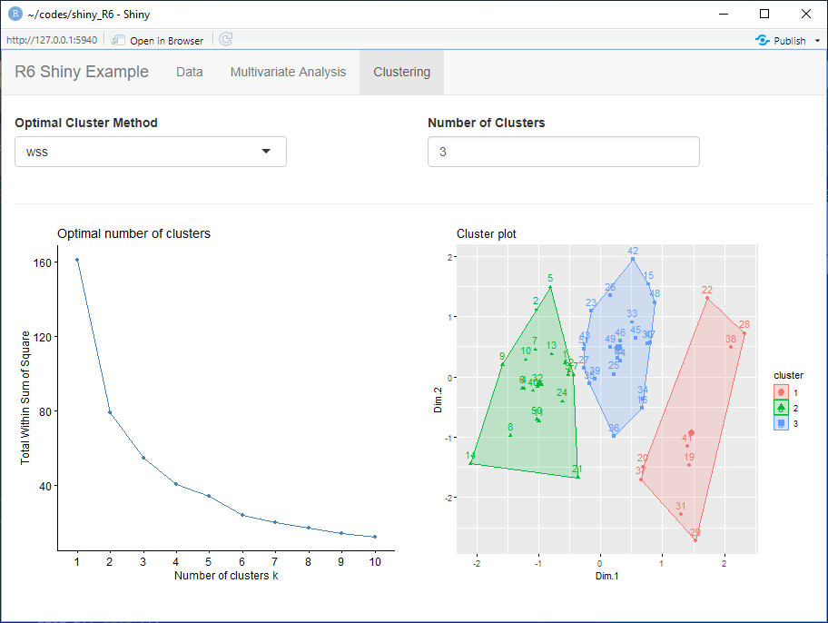

Analysis <- R6Class("Analysis",
public = list(
initialize = function(data = NULL) {
private$reactiveDep <- function(x) NULL
},
reactive = function() {
# Ensure the reactive stuff is initialized.
if (is.null(private$reactiveExpr)) {
private$reactiveDep <- reactiveVal(0)
private$reactiveExpr <- reactive({
private$reactiveDep()
self
})
}
private$reactiveExpr
},
),
private = list(
reactiveDep = NULL,
reactiveExpr = NULL,
invalidate = function() {
private$count <- private$count + 1
private$reactiveDep(private$count)
invisible()
},
count = 0
)
)Introduction
Here’s a simple example of working with a reactive R6 in a shiny app. It is inspired by a post to RStudio Community (https://community.rstudio.com/t/good-way-to-create-a-reactive-aware-r6-class/84890) and uses the code provided by Winston Chang to create an R6 class that is reactive. The example code is located in https://github.com/harveyl888/reactive_R6.
I can see two advantages and one disadvantage to using a reactive R6 class in a shiny app.
Advantages
- A single class instance can be shared between all shiny modules. This is particularly useful when working with shiny modules that are interdependent - ie content in module A is dependent on modules B and C, content in module B is dependent on modules A and C and content in module C is dependent on modules A and B. Using a reactive class means that we would simply send the class instance to each module. Any changes made to the class would automatically update in all shiny modules.
- The R6 class instance itself can be saved and read back in at a later date, essentially providing a snapshot. Saving and reimporting the class instance is a great way to keep a set of complex data together.
Disadvantage
- Since updating the class triggers a refresh, some reactive outputs may be updated when their content has not changed. This is due to the class itself being reactive.
In this post I’ll demonstrate a reactive R6 class called Analysis using a simple PCA and clustering example.
The Reactive Class
The main part of the code is the reactive class. Our class is built up from the code in the RStudio Community article when the class is initialized as reactive using Analysis$new(data=mydata)$reactive() (chaining), or by running the reactive() method on an initialized class instance, a couple of things occur:
- a reactiveVal,
reactiveDepis created, linked to a counter, which increases when the privateinvalidate()method is called. - a reactive expression,
reactiveExpris created which updates whenreactiveDepchanges.
The skeleton for the reactive R6 class is shown below:
The invalidate method can be used to invalidate the reactive class. This is used when calling other methods that update the class contents. Invalidating the class forces an update in the shiny app of anything that is dependent on the class instance. In our example, the Analysis class contains the following reactive methods:
filter(), pca(), cluster() and set_clusters()
and the following non-reactive methods:
import(), get_data() and print().
Use in Shiny App
One use of this class is in a complex shiny app with many shiny modules. Using a reactive class simplifies the data that needs to be passed between the modules. This is particularly true when there are multiple dependencies. In this case, we define our class and assign it to a reactiveValue which is then shared between shiny modules. When the class instance is updated it is reflected in all the shiny modules; no data need be returned from one class and passed to another. The class instance is defined in the app.R server function as follows:
data <- iris
rv <- reactiveValues(
analysis = NULL
)
observe({
analysis <- Analysis$new(data)
analysis$pca()
analysis$cluster()
rv$analysis <- analysis$reactive()
})Here, a class instance is initiated using iris data, PCA and clustering methods are run and the result is stored in a reactiveValue which is then passed to each of the shiny modules.
graph TB
subgraph rv$analysis
app.R --> mod_data.R;
app.R --> mod_multivariate.R;
app.R --> mod_cluster.R;
endEach shiny module sits in a different tab which look as follows:



Upon changing the data (for example filtering), the reactive class is updated, triggering updates of all dependent outputs in all shiny modules:



Conclusion
Reactive R6 classes in shiny apps provides a useful way to share complex data and parameters across multiple interdependent shiny modules. Example code can be found in https://github.com/harveyl888/reactive_R6.